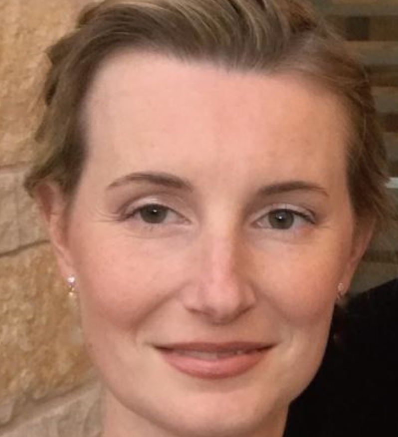

Texas State University Department of Mathematics presents:
At the start of each decade the law mandates that the boundaries of congressional districts must be redrawn in order to reflect the most recent changes to the population distribution. This is a process of immense importance for the proper functioning of our democracy - the shape of congressional districts greatly influences who runs and who wins in congressional elections, and even influences who controls Congress or state legislatures, or city councils. This process is meant to guarantee the adequate and just representation of the voices of every citizen, but this ideal is not always met.
The problem of constructing "fair" political districts and the related problem of detecting intentional gerrymandering has received a significant amount of attention in recent years. Attempting to analyze these issues from a mathematical perspective leads to a wide variety of interesting problems in geometry, graph theory, and probability. In this talk, I will discuss recent work centered around Markov chain sampling of districting plans that has motivated theoretical questions in these fields, including designing proposal distributions, evaluating the computational complexity of sampling, and measuring the geometric and partisan properties of districts.
Beyond mathematics, this work has also been appeared in court challenges, including an amicus brief to the Supreme Court last year, and helped inform legislative reform efforts. I will discuss what it is like to participate in these outreach efforts as a mathematician and some of the related data and computational challenges.
Daryl DeFord is an associate professor of Mathematics at Washington State University. He previously worked in the Geometric Data Processing Group at the Massachusetts Institute of Technology. He is affiliated with the Metric Geometry and Gerrymandering Group (MGGG), whose mission is to study applications of geometry and computing to U.S. redistricting, based on the belief that gerrymandering of all kinds is a fundamental threat to our democracy. Daryl's work with MGGG focuses on understanding mathematical representations of political geography and developing open-source software for analyzing districting plans. Additionally, he has studied the potential impacts of proposed language in citizen's initiatives and ballot measures on VRA compliance and partisan fairness. He has a Ph.D. in Mathematics from Dartmouth College with a thesis analyzing the dynamics of information flow in social and economic networks.
The presentation will be followed by a panel with members from academia, voting rights groups, and citizens commission on redistricting. The panel will discuss topics such as: the ways in which redistricting influences our politics, how political parties and various interests influence the map making process, the use and misuse of congressional maps to both expand or suppress the vote of groups historically excluded from the political process, and how mathematics and computer science are helping in the creation and analysis of congressional maps.
TJ CostelloAustin Independent Citizens' Redistricting Commission Vice-Chair Michael FaberTexas State University Assistant Professor of Political Science |
Joaquin GonzalezTexas Civil Rights Projects Staff Attorney  Stephanie SwansonLeague of Women Voters of Texas Issue Chair of Redistricting & Census |
The following resources provide background information on political redistricting and gerrymandering. They include basics of redistricting, how it affects the way our local, state, and federal governments operate, and the role civil society organizations and legal experts.
1.A primer on redistricting from Tuft's Metric Geometry and Gerrymandering Group.If you require accommodations due to a disability in order to participate, please contact 512.245.2551 at least 72 hours in advance of the event. Texas State University is a tobacco-free campus
This event is sponsored by the Texas State University Common Experience, Department of Mathematics, Department of Political Science, the Honors College, and Mathworks.